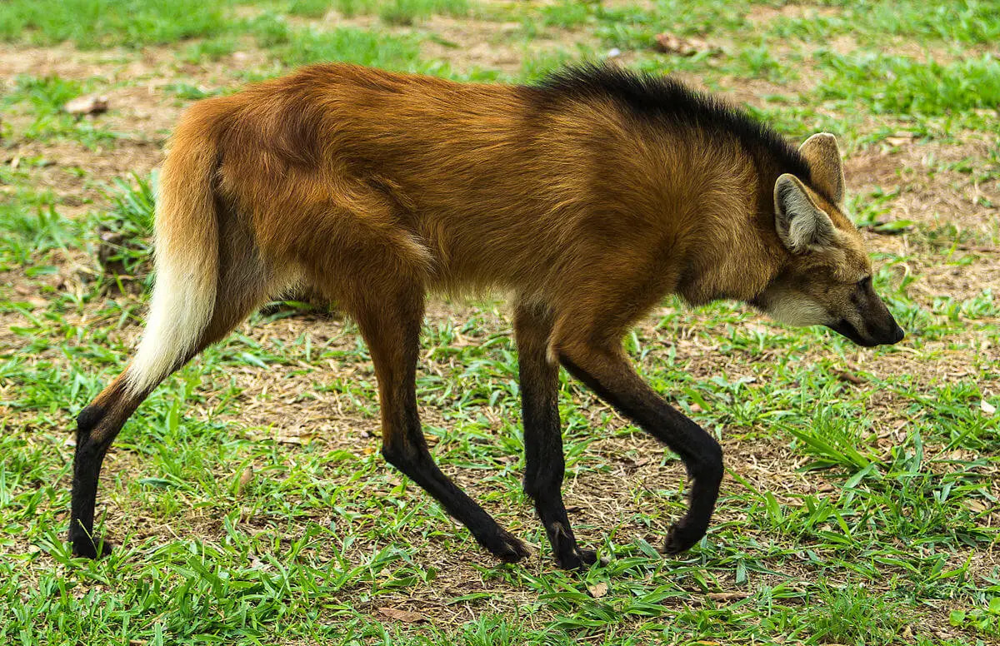
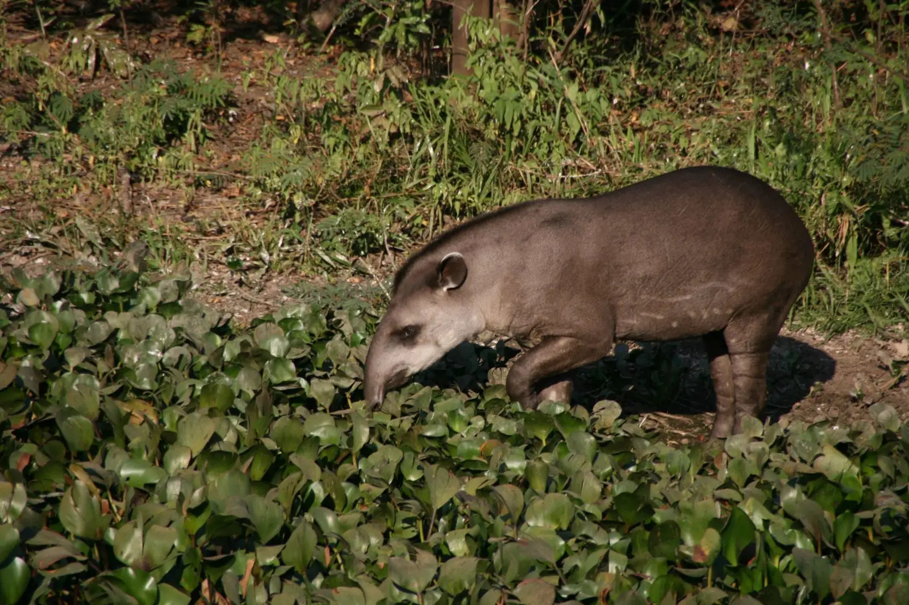
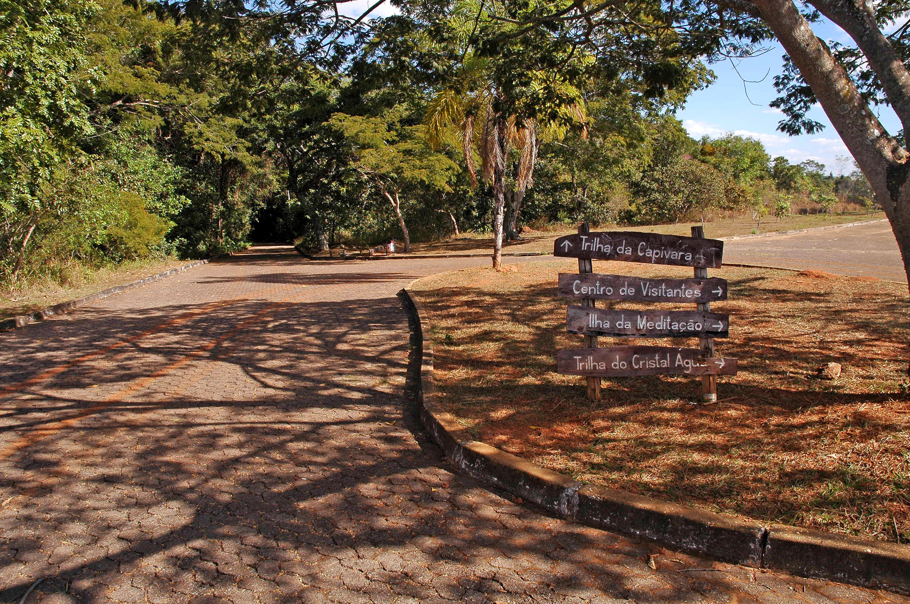
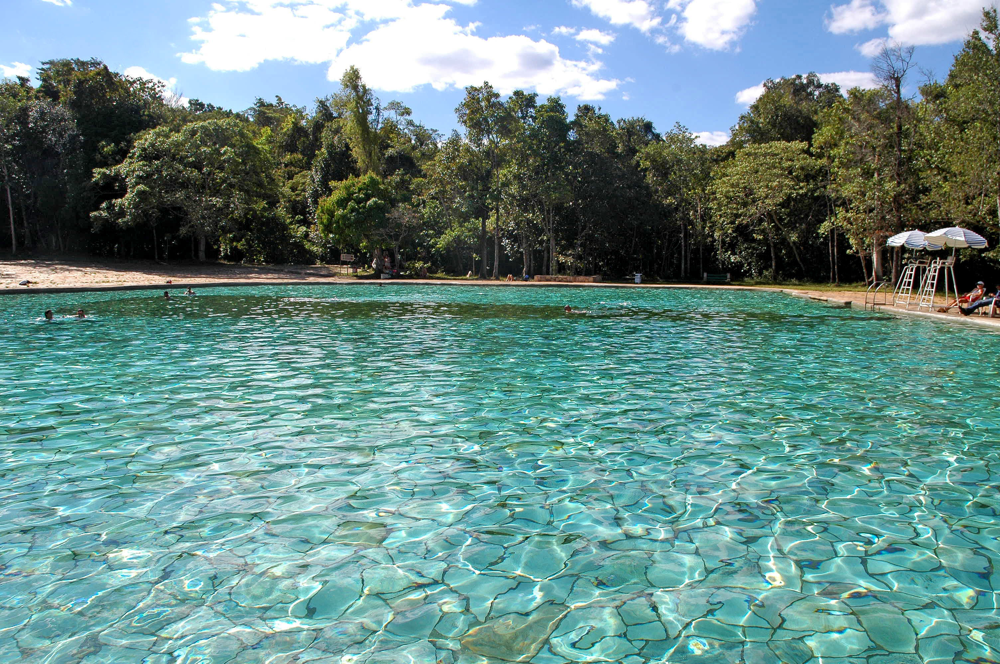
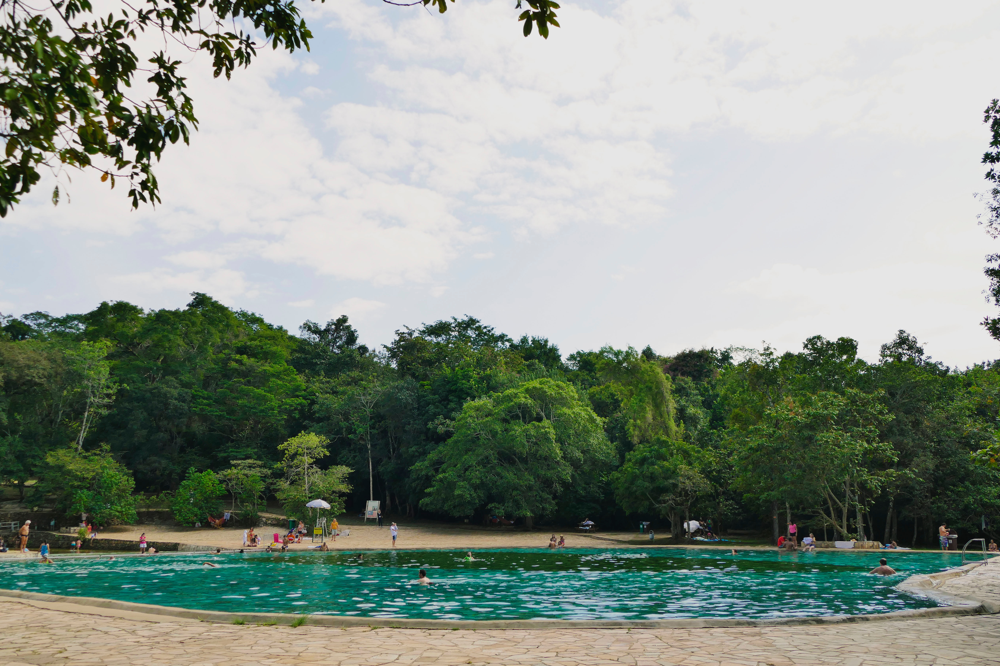
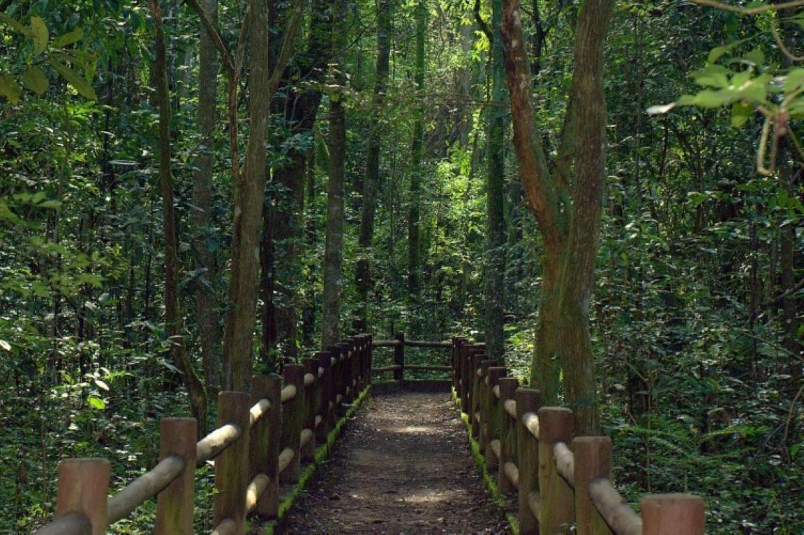
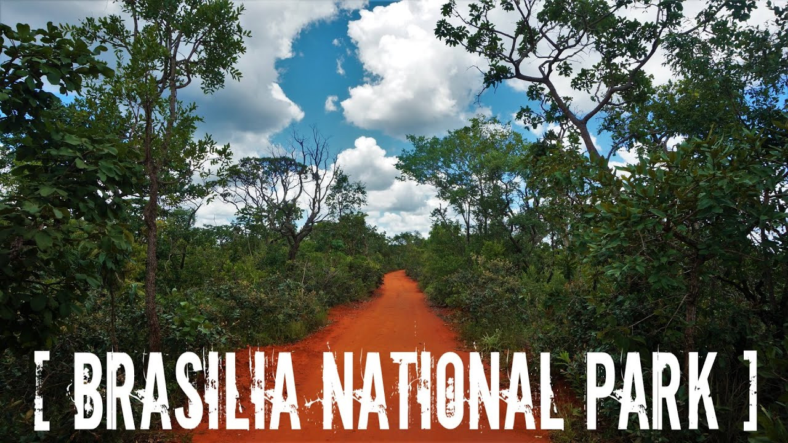
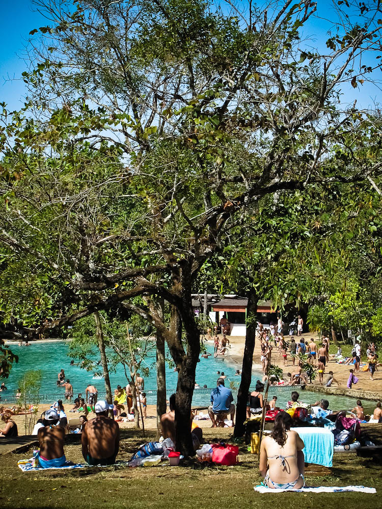
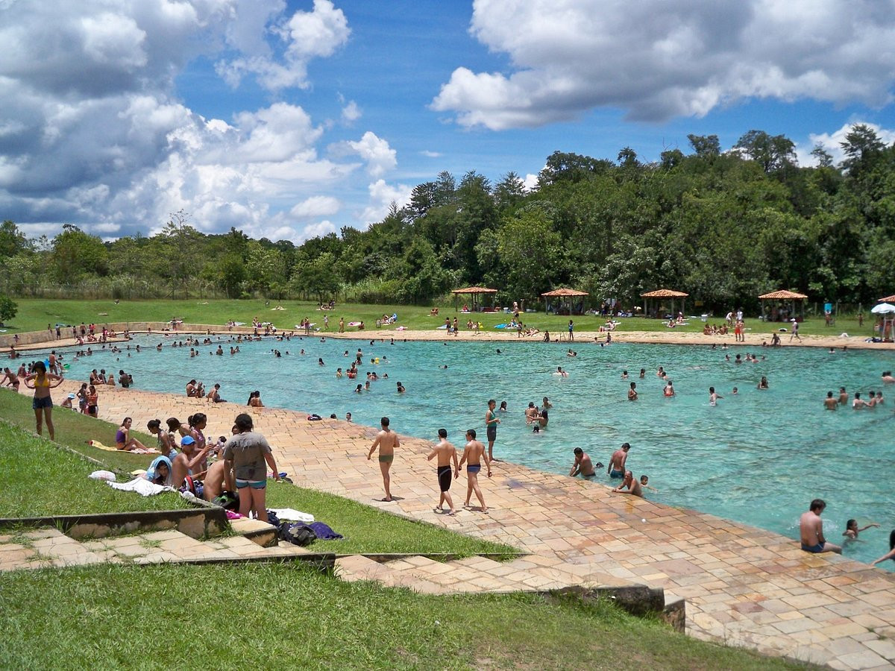
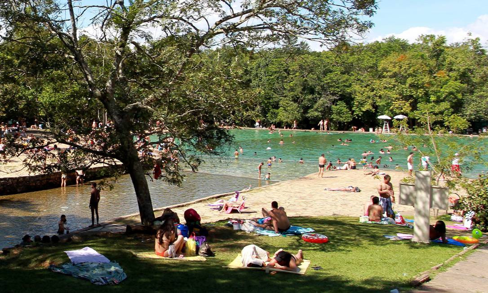

Apresentação
- O Parque Nacional de Brasília é uma das maiores áreas protegidas do Cerrado brasileiro, localizado a poucos quilômetros do centro da capital. Com uma rica biodiversidade, o parque abriga diversas espécies de animais e plantas, além de paisagens exuberantes que encantam visitantes de todas as idades. É um verdadeiro refúgio para quem busca contato com a natureza e um pouco de aventura.
Galeria de Fotos










Atrações
- Trilhas
- Piscina natural
- Mirante do Morro da Capivara
- Centro de visitantes
Atividades
- Trilhas ecológicas: Caminhadas guiadas ou independentes para explorar a natureza.
- Observação de aves: O parque abriga uma grande variedade de aves, sendo um paraíso para os observadores de pássaros.
- Picnic: É possível realizar piqueniques em áreas específicas do parque, desfrutando da natureza e da companhia de amigos e familiares.
- Educação ambiental: O parque oferece atividades educativas para escolas e grupos, promovendo a conscientização sobre a importância da preservação ambiental.
Dicas
- Melhor época para visitar: Os meses mais secos, entre maio e setembro, são os mais indicados para visitar o parque, pois as trilhas ficam mais acessíveis. O que levar: Água, protetor solar, repelente, chapéu, tênis confortáveis e câmera fotográfica.
- Alimentação: É permitido fazer piquenique em áreas específicas, mas também há opções de lanchonetes e restaurantes nas proximidades.
- Transporte: O parque pode ser acessado por carro ou transporte público.
Curiosidades
- O Parque Nacional de Brasília foi criado em 1961, juntamente com a cidade. A fauna do parque inclui animais como capivaras, veados, onças-pardas e diversas espécies de aves. A flora é composta principalmente por cerrado, com diversas espécies de árvores, arbustos e gramíneas. Informações Práticas:
Informações Práticas
- Endereço: Estrada Parque Indústria e Abastecimento (EPIA), Brasília - DF
- Horário de Funcionamento: Dias e horários podem variar de acordo com as condições climáticas, principalmente no período de seca/queimadas.Consulte o site oficial e o noticiário para informações atualizadas.
- Entrada: Há cobrança de ingresso
- Facilidades: Banheiros, lanchonetes
Como Chegar
- O parque está localizado a cerca de 10 km do centro de Brasília e pode ser acessado por carro ou transporte público. Para quem vai de carro, o acesso é pela Estrada Parque Indústria e Abastecimento (EPIA).
- Transporte Público: Opções de Linhas de ônibus que vão até o terminal da Asa Norte, e de lá caminhar cerca de 1 km até a portaria principal do parque.